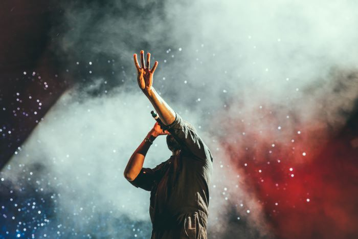

- FESTIVALUL TĂU PREFERAT DE MUZICĂ ELECTRONICĂ -
Electromania este mai mult decât un festival, este o celebrare a muzicii electronice, a creativității și a energiei colective. Vino și lasă-te purtat de valul electrizant al muzicii, împreună cu mii de alți fani care trăiesc pentru aceste momente de extaz sonor!
!!! August 15-17 !!!
!!! Locație: Castelul Teleki !!!
Într-o explozie de lumini și sunete, Electromania își deschide porțile pentru toți iubitorii de muzică electronică. Găzduit într-un cadru urban vibrant, Electromania oferă 3 scene impresionante, echipate cu cele mai avansate tehnologii de sunet și iluminare.
Pe măsură ce continuăm să creștem, ne propunem să aducem noi experiențe și îmbunătățiri la fiecare ediție a festivalului. Încurajăm inovația și colaborările creative pentru a oferi mereu ceva nou și surprinzător. Vă mulțumim că ați ales să faceți parte din familia Electromania. Haideți să creăm împreună amintiri de neuitat și să vibrăm pe ritmurile muzicii electronice!
Cu un line-up care include atât legende ale muzicii electronice, cât și artiști emergenți, Electric Vibes promite un mix de stiluri și genuri. De la house și techno, la drum and bass și EDM, fiecare set este o călătorie sonoră care te va purta într-o altă dimensiune.
Artiștii voștri preferați revin să vă ridice în picioare înca o data. Printre ei se numără:
(Day1)
(Day2)
Artiștii vor performa pe cele 3 scene: Main, Electro, Bass.
Main Stage: epicentrul festivalului, locul unde au loc cele mai mari și așteptate performanțe.
Electro Stage: paradisul dj-ilor, ritmuri hipnotice și un sistem de sunet puternic, locul unde poți dansa până în zori.
Bass stage: destinată artiștilor emergenți și celor care aduc sunete noi și inovatoare. Este locul perfect pentru a descoperi talente noi.
Main stage:
19:00-21:00-Mariusescu
21:00-23:00-Dj Marin Pop
23:00-00:00-Steve si Oki
00:00-02:00-Reconectr
02:00-04:00-Carbon
Electro stage:
20:00-22:00-RadioMix
22:00-00:00-Dj Cornelius
00:00-01:00-New Spice
01:00-03:00-YOLO
Bass stage:
20:30-23:00-Nailon
23:00-01:30-Efectiv
01:30-03:00-Nașu
03:00-05:00-Panda Music
Main stage:
19:00-21:00-Fenta
21:00-23:00-Dan Galben Mix
23:00-00:00-Chico
00:00-02:00-Demisec
02:00-04:00-Sebi Nun
Electro stage:
20:00-22:00-CostiNet & Moz
22:00-00:00-P&J
00:00-01:00-CASH
01:00-03:00-Dj Young
Bass stage:
20:30-23:00-Beetjuice
23:00-01:30-Ceapa și Feliile
01:30-03:00-BlueBeat
03:00-05:00-Dj Noris
Electromania nu ar fi posibilă fără sprijinul unei comunități pasionate și diverse. Fiecare participant, voluntar și artist contribuie la atmosfera vibrantă și prietenoasă care definește festivalul nostru. Ne străduim să creăm un spațiu incluziv unde toată lumea este binevenită și respectată.
Rolurie voluntarului:
Pentru înscrieri contactati electromania.volunteer@gmail.com